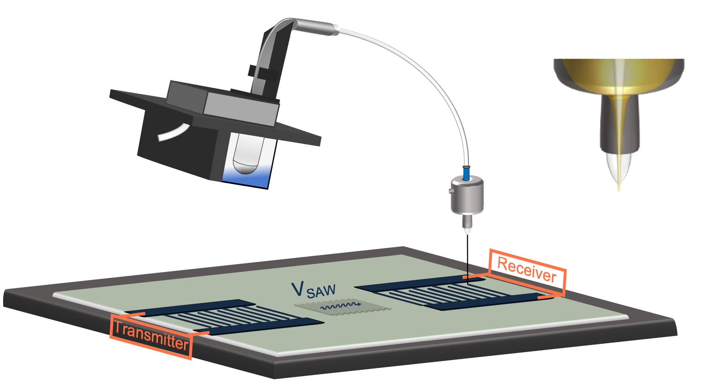

Using cutting-edge tools like aerosol jet printing and precision fabrication techniques, we bring innovation to life at micron scales. We specialize in functional prototyping, circuitry, smart substrates, and multi-material integration.
Aerosol Jet Printing Process

In this process, ultrasonically atomized nanoparticle ink droplets are carried from the ink reservoir to the printhead, where they are focused into an ordered stream for deposition onto the surface of a piezoelectric substrate. The SAW device functions by transforming an applied voltage into an acoustic wave that travels across the surface at a material-dependent speed of sound VSAW. Once it reaches a receiver, the acoustic wave is transformed back into a readable electrical signal.